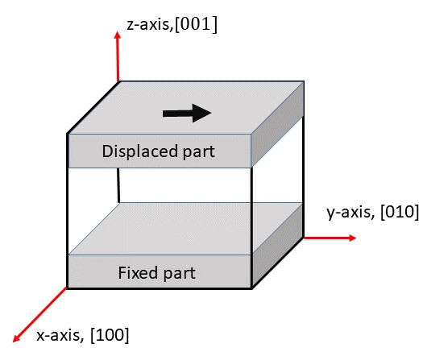

When information regarding the strength of materials is required, it is common practice to forcibly deform a sample and examine its response by employing experimental apparatus. Such MD simulations would enable to replace experimental research methods. This lecture will introduce you the MD for performing shear deformation, which is a type of deformation used in the experimental analyses.
To perform this type of deformation, different lateral forces are applied to two parallel surfaces of a material, such as its upper and lower surfaces. For example, the upper surface of the material is moved laterally with the lower surface fixed, as shown in the figure below,
 Fig.1: Schematic Picture of Shear Deformation
The procedure for performing the shear deformation MD is briefly mentioned in the following. First, the iron crystal is structurally relaxed at 0 K, then annealed at a finite temperature. Those who have studied this course from the beginning should already be familiar with the methods for carrying out these steps. Subsequently, shear deformation can be achieved by moving Displaced part at a constant speed as indicated by the black arrow in Fig.1 while fixing Fixing part.
Running MD for Shear Deformation
The script for running this MD is bccFe_shear.lcm in script directory. This is executed by typing the following command line into standard input.
The -v in the command line above is a flag, just like the previously introduced -in. Using the -v flag allows you to define variables used by LAMMPS before execution. This is convenient when you want to calculate different cases with different parameters using a single script. In this case, the box size is defined as 25a (where a is the lattice constant), and the duration of the shear deformation is set to 5000fs.
Upon successful completion of the abobe LAMMPS execution, numerous files named bccFe_shear_*.out will be generated in work directory, where "*" contains time-related information (namely an integer denoting time step usually starting from 0). Loading any one of these files into OVITO will import all files of this format. As before, running the animation will allow you to observe the time development, in this case, the shear deformation. The animation viewed along the xz plane is given below; please compare it with yours.
Video 1: Time development of the shear deformation MD
Step-by-Step Analysis of Input Script
Create the Target Crystal
Let's take a look at the script as we did in previous lectures. The initial block is displayed as follows:
The first four lines are comment statements and have no effect on the MD execution. These commented-out variable commands are equivalent to the variable definitions via the -v flag in the command line above. These lines are only for the readability purpose ensuring that these variables are already defined.
Here is the next block:
units metal
boundary p p p
atom_style atomic
lattice bcc 2.83 orient x 1 0 0 orient y 0 1 0 orient z 0 0 1
region sim_box block 0 ${x_lattice} 0 ${y_lattice} 0 ${z_lattice} units lattice
create_box 1 sim_box
create_atoms 1 box
This block is almost identical to the initial part of the script already explained in Structural Relaxation. The only difference lies in the use of variables within the region command.
In LAMMPS scripts, the notation ${a} is used to refer to the variable a. Therefore, this region command was executed with variables such as x_lattice substituted. Strictly speaking, only the string defined by x_lattice was substituted. By using -v flag in this manner, one can alter parameters in each run, enabling flexible operation of a single script.
Removing Top and Bottom Surfaces
Here is the next block:
variable boundary_width equal 3
variable vacuum_high equal ${z_lattice}-${boundary_width}
region lower_vacuum block INF INF INF INF INF ${boundary_width} units lattice
region upper_vacuum block INF INF INF INF ${vacuum_high} INF units lattice
delete_atoms region lower_vacuum
delete_atoms region upper_vacuum
This block is a little difficult to understand, so please read it carefully. In the boundary command of the previous block, periodic boundary conditions were selected on three sides. This means that the top and bottom surfaces in the diagram above are connected to each other. Therefore, even if shear deformation like that in the diagram above is applied, the movement of the top surface would have dragged the bottom surface along with it. To avoid this unwanted behavior, the top and bottom surfaces need to be separated. To achieve this, we must remove a thin slice from each of the top and bottom surfaces. The above script block is performing that operation, which will be explained below.
The first variable command defines the removing width boundary_width as 3, where the unit of this parameter is the lattice constant as will become clear later. Consequently, the top and bottom surfaces of the material sample are separated by a distance equal to six times the lattice constant, then they no longer have interaction. The next variable command defines the position of the new top surface after the surface removing.
The following two region commands define the upper and lower region to be removed, lower_vacuum and upper_vacuum. As previously studied, block is a keyword denoting the type of area, here representing a rectangular space, with the subsequent six values defining the specific boundary. The keyword INF, as also appeared before, signifying the limit value. Subsequent units lattice specifies the numerical units used in this region command as lattice constants.
The last two delete_atoms region commands remove all atoms within the specified region, allowing the top and bottom surfaces to be finally removed.
Defining Externally-Controlled Regions
Here are the next several lines of script:
variable lower_board equal ${boundary_width}+${boundary_width}
variable upper_board equal ${vacuum_high}-${boundary_width}
region lower block INF INF INF INF INF ${lower_board} units lattice
region upper block INF INF INF INF ${lower_board} INF units lattice
group lower region lower
group upper region upper
group boundary union lower upper
group mobile subtract all boundary
This command block defines the grey sections in Fig.1, namely the fixed base plate and the top plate to be forcibly moved.
The first two variable commands define the topmost position of the base plate and the lowest position of the top plate.
In the next line, the region command defines the regions for the base plate and top plate. This region includes the vacuum portion created earlier, but as there are no atom left there, the portion does not need to be cared.
The following two group ... region commands create a group of atoms within the region specified after regions keyword. Here, lower and upper groups are created from lower and upper region, respectively.
The following group...union command combines multiple groups specified after union to create a new group. Here, the base plate and top plate groups were combined to create a new group named boundary.
The next group... subtract command is the inverse of group ...union, performing group subtraction. Here, atoms belonging to boundary group were removed from all atoms within the entire simulation box, and the remaining group of atoms was newly defined as mobile.
The meaning of region and group are easily confused, but note that region refers to space, while group does to a collection of atoms.
Defining Atomic Interaction
pair_style eam/fs
pair_coeff * * ./potentials/Fe_mm.eam.fs Fe
neigh_modify every 1 delay 0 check yes
The first two lines define the iron interatomic potential, which was explained in the lecture on structural relaxation and will not be repeated here.
The third line is nigh_modify command, but in fact there is a hidden command preceding it, that is, the definition of the neighbour list. In LAMMPS, each interatomic potential carries a cutoff distance at which the interatomic force is ignored for atom pairs beyond that distance. This avoids unnecessary interatomic calculations, improving efficiency. In other words, interatomic potentials are calculated only for atom pairs closer than the cutoff distance.
The neighbour list specifies all the pairs for which the interatomic force must be given. However, in practice, since atoms move, we must allow a little margin and also calculate the interatomic force for atom pairs that are slightly beyond the cutoff distance. This margin is called the "skin".
The default setting when units metal is described at the beginning of the script is neighbour 2.0 bin. That is, a skin of 2.0 Angstroms in thickness is used. The bin described here refers to a type of neighbour list construction algorithm. See the page 13 of Steve Plimpton's presentation slides for the algorithm.
Therefore, this command has already been executed in practice. As the thickness of skins increases, so does the memory usage; if memory becomes insufficient during calculations, it may be worth considering thinning the skin within permissible limits.
Let us return to the explanation of the main subject, neighbour_modify command. Here, every n delay m signifies that the list is updated every n steps, following a delay of m steps after a new neighbour list is built. check yes specifies that the list is only updated when a certain condition is met. This condition is when an atom's displacement reaches the skin. The default is every 1 delay 0 check yes. Therefore, this line is unnecessary in practice. Altering these parameters may potentially reduce computation time. For instance, if atoms are not moving vigorously, the updates could be less frequent. Conversely, if atoms move intensely, the computational cost of checking each time might be wasteful, making check no preferable.
Structural Relaxation
Here we see the next block:
fix 1 all box/relax iso 0.0 vmax 0.001
thermo 200
thermo_style custom step pe lx ly lz press
min_style cg
minimize 1.e-25 1.0e-12 10000 50000
unfix 1
The fix... box/relax command is for volume relaxation, as we have already learnt.
The following thermo command specifies the interval of which system thermodynamical variables are calculated; the variables will be computed every 200 calculation steps, with some results output to standard output.
The following thermo_style custom command defines the output format to standard output. In this example, step (simulation step), pe (total potential energy), lx ly lz (box dimensions in three directions), and press (pressure) will be printed.
The following min_style command and minimize command appeared in the section on structural relaxation, so their explanation is not repeated.
The next unfix command has also been learnt. This is the procedure to invalidate fix command once it has fulfilled its purpose. Here, since the structural relaxation calculation has finished, fix ... box/rescale command at the beginning of this block is being invalidated.
Annealing
The next block of script is:
variable set_temp equal 10.
velocity mobile create ${set_temp} 1582775
fix 1 all nve
fix 2 boundary setforce 0.0 0.0 0.0
fix 3 mobile temp/rescale 10 ${set_temp} ${set_temp} 0.1 1.0
reset_timestep 0
run 1000
This block is dedicated to anneal the atoms belonging to mobile group sandwiched between the bottom and top plates under the set temperature.
The variable command defines a variable named set_temp and assigns the value 10 to it. As you'll see below, this is the annealing temperature.
The next velocity ... create command is, as mentioned in the lecture for annealing, the command for setting the temperature. Here, we set the temperature defined by set_temp (i.e. 10 K) for the atoms in mobile group that consists of atoms located between the bottom and top plates.
The following fix ... nve command specifies performing time integration for the entire system with fixed total number of atoms, fixed volume, and fixed energy (i.e., with the micronorm canonical ensemble). As you probably understand by now, this only specifies the calculation method; the actual calculation has not yet begun.
The following fix ... setforce command is used to forcibly apply atomic forces. Within boundary group, which combines the bottom and top plates, the atomic force is set to zero. As mentioned earlier, the motion of atoms in these regions is not governed by the interatomic potential; instead, they are forcibly fixed or moved. In many MD simulations of material deformation, situations arise where groups of atoms are forcibly fixed or moved. This is where the fix ... setforce command proves useful. Note that the identifier of this fix is 2. Multiple fix commands can be executed, distinguished by their identifiers. In other words, two or more fix commands with the same identifier cannot be executed simultaneously.
The next fix... temp/rescale command has already been covered in the lecture for annealing, so detailed explanation is omitted. However, it is worth noting that temperature adjustment is set only for mobile group. This is because only mobile group evolves over time at finite temperatures using the interatomic potential.
As already explained, the next reset_timestep command initializes the simulation's time step. Actually, it doesn't need to be written because the time step is initially set to 0. However, it's useful to keep the script's readability.
Now that everything is ready for running the annealing process with run command. Here, to reduce computational load, we set the length to 1000 steps, i.e., 1 ps, but ideally, it should be about 100 times longer, i.e., 100 ps. This annealing works only for the atoms within the mobile group. Since upper and lower groups are fixed by the fix ... setforce commands, boundary group atoms are not be mixed with atoms of mobile group.
Shear Deformation
Here is the final block of the script:
velocity upper set 0.1 0. 0.
reset_timestep 0
dump 1 all custom 200 bccFe_shear_*.out id type xs ys zs
run ${max_step}
First, velocity ... set command, unlike the previously mentioned velocity .. create command, it assigns a uniform velocity to a specified group. The first argument, upper is the group to which the velocity is applied, which in Fig.1 is the group of atoms belonging to the top plate. The three numbers following set represent the velocities in the (x, y, z) directions, respectively. Regarding the velocity units, because units metal is declared at the beginning of the script, the units become Angstrom/ps.
The reset_timestep command has already been explained above. In this case, the time has already advanced to 1000 steps (i.e., 1 ps), so the command set the time back to zero.
The following dump...custom command should also be fairly straightforward to understand, based on the previous explanations. The difference here is the addition of the "_*" part to the filename. Previously, the dump...custom command produced a single output file, but this method can sometimes result in a single file becoming excessively large. Using this wild-card approach, as seen above, creates multiple files at 200-step intervals starting from bccFe_shear_0.out, This prevents a single file from becoming too large. These are the files loaded onto OVITO to look at the animation we learned above.
Then, the final run command executes the shear deformation for the duration specified on the command line to standard input above.
The workflow of performing structural relaxation and annealing followed by the MD simulations of phenomena of interest is commonly used, so this script will likely serve as a template for various other scripts.
While not limited to this script, once you grasp the overall concept of a script, experimenting with different parameters to run various cases will deepen your understanding.